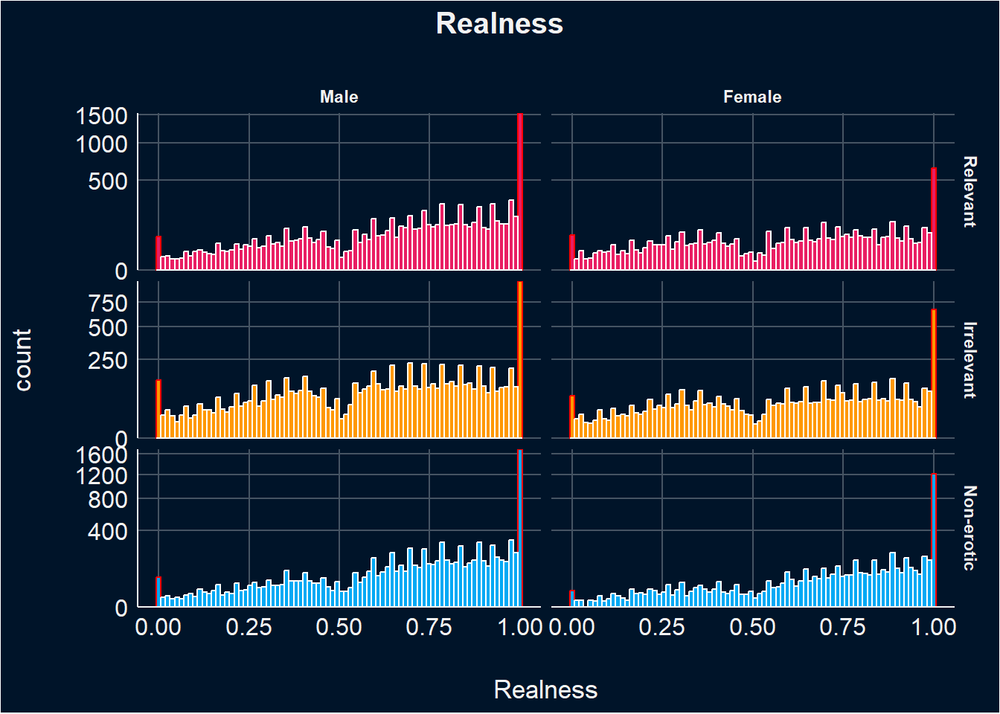
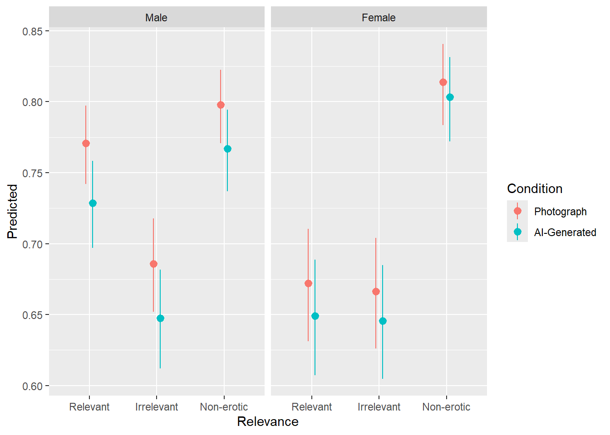
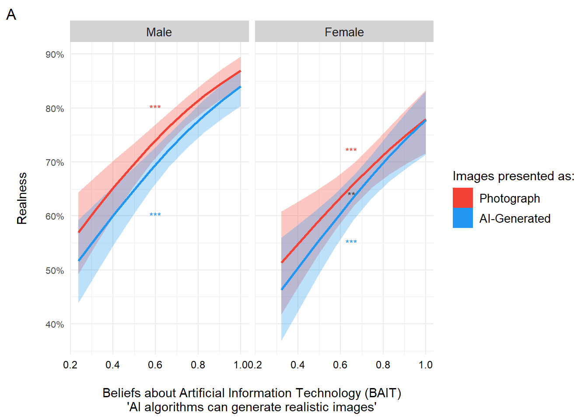
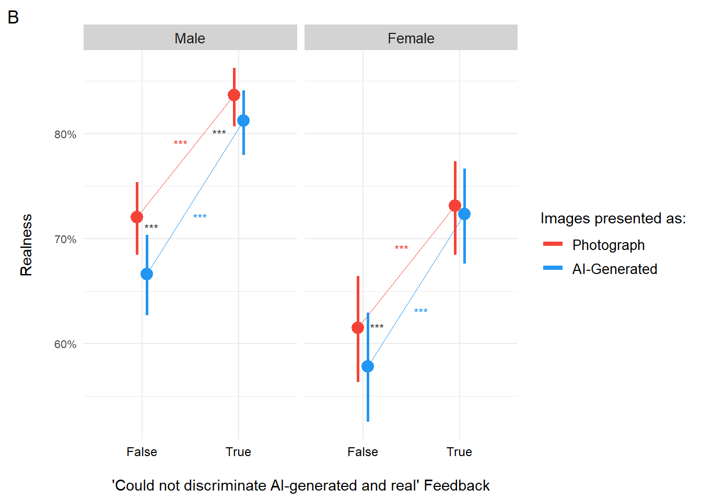
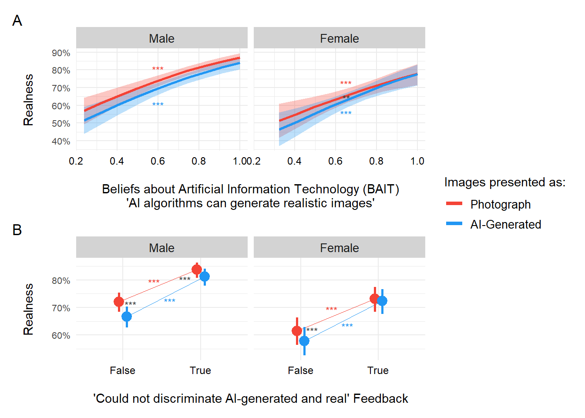

Code
library(tidyverse)
library(easystats)
library(patchwork)
library(ggside)
library(glmmTMB)
options(mc.cores = parallel::detectCores(),
brms.backend = "cmdstanr",
width = 300)library(tidyverse)
library(easystats)
library(patchwork)
library(ggside)
library(glmmTMB)
options(mc.cores = parallel::detectCores(),
brms.backend = "cmdstanr",
width = 300)dfsub <- read.csv("../data/data_participants.csv")
df <- read.csv("../data/data.csv") |>
right_join(
select(dfsub, Participant, Sample, Language, Mobile, starts_with("Feedback_"),
BAIT_Visual, BAIT_Text, AI_Knowledge, SexualActivity,
GAAIS_Negative, GAAIS_Positive, Porn, COPS_Frequency_2,
-Feedback_Comments),
by = "Participant"
) |>
datawizard::rescale(select=c("Valence"), range=c(-1, 1), to=c(0, 1)) |>
mutate(Condition = fct_relevel(Condition, "Photograph", "AI-Generated"),
Relevance = fct_relevel(Relevance, "Relevant", "Irrelevant", "Non-erotic"),
Sex = fct_relevel(Sex, "Male", "Female"),
PornFrequency = as.numeric(as.factor(COPS_Frequency_2)),
SexualActivity_num = as.numeric(as.factor(SexualActivity)),
ConditionBelief = case_when(
Condition == "Photograph" & Realness > 0.5 ~ "True",
Condition == "AI-Generated" & Realness < 0.5 ~ "True",
.default = "False"
),
RealnessBelief = ifelse(Realness > 0.5, 1, 0)) |>
mutate(across(starts_with("Feedback_"), function(x) {fct_relevel(x, "False", "True")}))
results_table <- function(model, effects="fixed", filter=NULL) {
if("marginaleffects" %in% class(model)) {
model |>
parameters::parameters() |>
as.data.frame() |>
select(-Parameter, -SE, -S, z=Statistic, -Predicted) |>
insight::format_table() |>
parameters::display()
} else {
display(parameters::parameters(model, effects=effects, keep=filter))
}
}Similar to the arousal data, the realness data contains a mixture of responses ranging from extreme values (0 and 1) to intermediate values between 0 and 1. Consequently, an ordered beta model was used for this data, as it is the most suitable for bounded data (e.g., survey sliders).For more information on these models see (Kubinec, 2022).
df |>
mutate(Realness_Extreme = ifelse(Realness %in% c(0, 1), "Extreme", "Not extreme")) |>
ggplot(aes(x=Realness, fill=Relevance)) +
geom_histogram(aes(color=Realness_Extreme), position = "identity", bins=80) +
facet_grid(Relevance~Sex, scales="free_y") +
scale_color_manual(values=c("red", "white"), guide="none") +
scale_fill_manual(values=c("Relevant"="#E91E63", "Irrelevant"="#FF9800", "Non-erotic"="#03A9F4"), guide="none") +
scale_y_sqrt(expand = c(0, 0)) +
labs(title = "Realness") +
theme_abyss() +
theme(plot.title = element_text(hjust = 0.5, face="bold"))
Here, we are examining the effect of various physical characteristics of the images to evaluate whether they influence the perceived realness of the images. Neither Entropy, Complexity, Contrast, nor Luminance significantly influence the perceived realness of the images, nor the likelihood of realness being above 0.5 (“RealnessBelief”), as indicated by the lack of significant effects.
make_model <- function(f, family=glmmTMB::ordbeta()) {
m <- glmmTMB::glmmTMB(as.formula(f),
data=df,
family=family,
control = glmmTMB::glmmTMBControl(parallel = 8))
print(results_table(m))
m
}
m <- make_model("Realness ~ Entropy + (1|Participant) + (1|Item)", family=glmmTMB::ordbeta())
Table: Fixed Effects
|Parameter | Coefficient | SE | 95% CI | z | p |
|:-----------|:-----------:|:----:|:-------------:|:----:|:-----:|
|(Intercept) | 0.20 | 0.48 | (-0.74, 1.14) | 0.42 | 0.675 |
|Entropy | 0.10 | 0.07 | (-0.03, 0.23) | 1.54 | 0.123 |m <- make_model("RealnessBelief ~ Entropy + (1|Participant) + (1|Item)", family="binomial")
Table: Fixed Effects
|Parameter | Log-Odds | SE | 95% CI | z | p |
|:-----------|:--------:|:----:|:-------------:|:----:|:-----:|
|(Intercept) | 0.15 | 1.15 | (-2.11, 2.41) | 0.13 | 0.897 |
|Entropy | 0.24 | 0.16 | (-0.07, 0.55) | 1.53 | 0.126 |m <- make_model("Realness ~ Complexity + (1|Participant) + (1|Item)", family=glmmTMB::ordbeta())
Table: Fixed Effects
|Parameter | Coefficient | 95% CI |
|:-----------|:-----------:|:------:|
|(Intercept) | 0.71 | |
|Complexity | 9.13e-07 | |m <- make_model("RealnessBelief ~ Complexity + (1|Participant) + (1|Item)", family="binomial")
Table: Fixed Effects
|Parameter | Log-Odds | SE | 95% CI | z | p |
|:-----------|:--------:|:--------:|:---------------------:|:----:|:------:|
|(Intercept) | 1.43 | 0.31 | (0.81, 2.04) | 4.55 | < .001 |
|Complexity | 1.92e-06 | 1.16e-06 | (-3.54e-07, 4.19e-06) | 1.65 | 0.098 |m <- make_model("Realness ~ Contrast + (1|Participant) + (1|Item)", family=glmmTMB::ordbeta())
Table: Fixed Effects
|Parameter | Coefficient | SE | 95% CI | z | p |
|:-----------|:-----------:|:--------:|:-----------------:|:----:|:-----:|
|(Intercept) | 0.71 | 0.23 | (0.27, 1.15) | 3.14 | 0.002 |
|Contrast | 3.77e-03 | 3.60e-03 | (-3.30e-03, 0.01) | 1.04 | 0.296 |m <- make_model("RealnessBelief ~ Contrast + (1|Participant) + (1|Item)", family="binomial")
Table: Fixed Effects
|Parameter | Log-Odds | SE | 95% CI | z | p |
|:-----------|:--------:|:--------:|:-----------------:|:----:|:-----:|
|(Intercept) | 1.46 | 0.54 | (0.40, 2.52) | 2.70 | 0.007 |
|Contrast | 7.36e-03 | 8.72e-03 | (-9.73e-03, 0.02) | 0.84 | 0.399 |m <- make_model("Realness ~ Luminance + (1|Participant) + (1|Item)", family=glmmTMB::ordbeta())
Table: Fixed Effects
|Parameter | Coefficient | SE | 95% CI | z | p |
|:-----------|:-----------:|:--------:|:---------------------:|:----:|:------:|
|(Intercept) | 0.79 | 0.15 | (0.49, 1.09) | 5.20 | < .001 |
|Luminance | 3.07e-03 | 3.00e-03 | (-2.80e-03, 8.94e-03) | 1.02 | 0.306 |m <- make_model("RealnessBelief ~ Luminance + (1|Participant) + (1|Item)", family="binomial")
Table: Fixed Effects
|Parameter | Log-Odds | SE | 95% CI | z | p |
|:-----------|:--------:|:--------:|:-----------------:|:----:|:------:|
|(Intercept) | 1.63 | 0.36 | (0.93, 2.34) | 4.52 | < .001 |
|Luminance | 5.80e-03 | 7.25e-03 | (-8.41e-03, 0.02) | 0.80 | 0.424 |This model examines the influence of sex, relevance, and condition on ratings of realness, incorporating random effects for participants and items.
Both genders significantly rate AI-generated images as less real than images labeled as photographs.
For males, this reduction in realness is consistent across all relevance categories. Specifically, males rate irrelevant images as significantly less real compared to relevant images. Additionally, males rate relevant AI-generated images as significantly less real compared to relevant photographs and rate irrelevant AI-generated images as significantly less real compared to irrelevant photographs.
For females, while they also rate AI-generated images as less real, the reduction is smaller. Females rate irrelevant AI-generated images as significantly less real compared to irrelevant photographs.
Both genders rate non-erotic images as more real than relevant images, with this difference being significant for females. For non-erotic images, males rate AI-generated images as significantly less real than photographs, but for females, this difference is not significant.
m <- make_model("Realness ~ Sex / (Relevance / Condition) +
(Relevance|Participant) + (1|Item)",
family=glmmTMB::ordbeta())
Table: Fixed Effects
|Parameter | Coefficient | SE | 95% CI | z | p |
|:----------------------------------------------------------|:-----------:|:----:|:--------------:|:------:|:------:|
|(Intercept) | 1.21 | 0.08 | (1.06, 1.37) | 15.25 | < .001 |
|Sex (Female) | -0.50 | 0.12 | (-0.73, -0.26) | -4.09 | < .001 |
|Sex (Male) × RelevanceIrrelevant | -0.43 | 0.09 | (-0.60, -0.27) | -5.07 | < .001 |
|Sex (Female) × RelevanceIrrelevant | -0.03 | 0.09 | (-0.20, 0.15) | -0.29 | 0.768 |
|Sex (Male) × RelevanceNon-erotic | 0.16 | 0.09 | (-0.01, 0.33) | 1.80 | 0.071 |
|Sex (Female) × RelevanceNon-erotic | 0.76 | 0.09 | (0.57, 0.94) | 8.08 | < .001 |
|Sex (Male) × RelevanceRelevant × ConditionAI-Generated | -0.22 | 0.02 | (-0.26, -0.19) | -11.04 | < .001 |
|Sex (Female) × RelevanceRelevant × ConditionAI-Generated | -0.10 | 0.03 | (-0.15, -0.05) | -3.99 | < .001 |
|Sex (Male) × RelevanceIrrelevant × ConditionAI-Generated | -0.17 | 0.02 | (-0.21, -0.13) | -8.81 | < .001 |
|Sex (Female) × RelevanceIrrelevant × ConditionAI-Generated | -0.09 | 0.03 | (-0.14, -0.04) | -3.54 | < .001 |
|Sex (Male) × RelevanceNon-erotic × ConditionAI-Generated | -0.18 | 0.02 | (-0.22, -0.14) | -8.78 | < .001 |
|Sex (Female) × RelevanceNon-erotic × ConditionAI-Generated | -0.07 | 0.03 | (-0.12, -0.01) | -2.41 | 0.016 |predbeta <- estimate_relation(m, length=20)
m <- make_model("RealnessBelief ~ Sex / (Relevance / Condition) +
(Relevance|Participant) + (1|Item)",
family="binomial")
Table: Fixed Effects
|Parameter | Log-Odds | SE | 95% CI | z | p |
|:----------------------------------------------------------|:--------:|:----:|:--------------:|:-----:|:------:|
|(Intercept) | 2.56 | 0.18 | (2.21, 2.92) | 14.15 | < .001 |
|Sex (Female) | -1.09 | 0.26 | (-1.61, -0.57) | -4.14 | < .001 |
|Sex (Male) × RelevanceIrrelevant | -0.93 | 0.22 | (-1.36, -0.49) | -4.20 | < .001 |
|Sex (Female) × RelevanceIrrelevant | -0.11 | 0.22 | (-0.55, 0.33) | -0.50 | 0.618 |
|Sex (Male) × RelevanceNon-erotic | 0.40 | 0.23 | (-0.05, 0.85) | 1.72 | 0.085 |
|Sex (Female) × RelevanceNon-erotic | 1.56 | 0.24 | (1.09, 2.04) | 6.48 | < .001 |
|Sex (Male) × RelevanceRelevant × ConditionAI-Generated | -0.59 | 0.07 | (-0.72, -0.46) | -8.78 | < .001 |
|Sex (Female) × RelevanceRelevant × ConditionAI-Generated | -0.25 | 0.08 | (-0.40, -0.10) | -3.35 | < .001 |
|Sex (Male) × RelevanceIrrelevant × ConditionAI-Generated | -0.45 | 0.06 | (-0.56, -0.33) | -7.68 | < .001 |
|Sex (Female) × RelevanceIrrelevant × ConditionAI-Generated | -0.13 | 0.07 | (-0.28, 0.01) | -1.78 | 0.075 |
|Sex (Male) × RelevanceNon-erotic × ConditionAI-Generated | -0.59 | 0.07 | (-0.74, -0.45) | -8.12 | < .001 |
|Sex (Female) × RelevanceNon-erotic × ConditionAI-Generated | -0.25 | 0.10 | (-0.45, -0.06) | -2.56 | 0.010 |predbin <- estimate_relation(m, length=20)
predbeta |>
ggplot(aes(x=Relevance, y=Predicted)) +
geom_pointrange(aes(ymin=CI_low, ymax=CI_high, color=Condition), position = position_dodge(width=0.2)) +
facet_grid(~Sex)
Here we look at whether the findings above are moderated by AI-Attitudes, Porn usage, or feedback.
This model examines how ratings of realness, predicted by sex, condition, and relevance, are moderated by beliefs about AI’s visual and textual capacities, self-reported knowledge of AI, as well as positive and negative attitudes towards AI (note that these results are relative to a baseline of male participants viewing relevant images labelled as photographs). Additionally, the model includes relevance and items as random effects.
Beliefs about AI’s visual capacity played a pivotal role in moderating realness ratings, showing nuanced effects across genders and image contexts. Both males and females generally rated images as more real as their beliefs in AI’s visual capabilities increased. However, this relationship varied significantly depending on the relevance of the images. For males, increased beliefs in AI’s visual capacity were associated with decreased realness ratings specifically when presented with irrelevant images. In contrast, females tended to rate both irrelevant and non-erotic images higher in realness as their beliefs in AI’s visual abilities increased. Notably, for females viewing irrelevant images labeled as AI-generated, higher beliefs in AI’s visual capacity led to decreased realness ratings, indicating a complex interaction.
Beliefs in AI’s textual abilities also influenced realness ratings, but the effects differed between genders and image contexts. Females showed lower realness ratings for irrelevant images labeled as AI-generated as their beliefs in AI’s textual abilities increased. Conversely, males demonstrated increased realness ratings only for non-erotic images labeled as AI-generated with higher beliefs in AI’s textual capabilities.
Self-reported knowledge of AI had distinct effects on realness ratings as well. Males rated non-erotic images lower in realness as their self-reported AI knowledge increased. In contrast, females rated irrelevant images labeled as AI-generated as more real with higher self-reported AI knowledge, suggesting divergent perceptions based on their understanding of AI.
Attitudes towards AI, whether positive or negative, further moderated ratings of realness. Positive attitudes generally enhanced realness ratings across genders. However, this effect was notably diminished for males when viewing irrelevant or non-erotic images labeled as AI-generated. Conversely, negative attitudes towards AI tended to decrease realness ratings for females, except when they viewed relevant images labeled as AI-generated, where negative attitudes paradoxically increased perceptions of realness.
test_moderator <- function(df, moderator="BAIT_Visual") {
f <- paste0("Realness ~ Sex / (Relevance / Condition * ", moderator, ") + (Relevance | Participant) + (1|Item)")
r <- glmmTMB::glmmTMB(as.formula(f),
data=df,
family=glmmTMB::ordbeta(),
control = glmmTMB::glmmTMBControl(parallel = 8)) |>
parameters::parameters() |>
as.data.frame() |>
select(-df_error, -Effects, -Group, -Component, -SE)
r$Moderator <- moderator
insight::format_table(filter(r, str_detect(Parameter, moderator)))
}
moderator <- data.frame()
for(m in c("BAIT_Visual", "BAIT_Text", "AI_Knowledge",
"GAAIS_Positive", "GAAIS_Negative")) {
moderator <- rbind(moderator, test_moderator(df, m))
}
display(filter(moderator, p < .05))| Parameter | Coefficient | 95% CI | z | p | Moderator |
|---|---|---|---|---|---|
| Sex [Male] × BAIT Visual | 2.12 | [ 1.50, 2.74] | 6.71 | < .001 | BAIT_Visual |
| Sex [Female] × BAIT Visual | 1.79 | [ 0.85, 2.73] | 3.73 | < .001 | BAIT_Visual |
| Sex [Male] × RelevanceIrrelevant × BAIT Visual | -0.57 | [-0.90, -0.23] | -3.35 | < .001 | BAIT_Visual |
| Sex [Female] × RelevanceIrrelevant × BAIT Visual | 0.54 | [ 0.04, 1.04] | 2.12 | 0.034 | BAIT_Visual |
| Sex [Female] × RelevanceNon-erotic × BAIT Visual | 1.33 | [ 0.67, 2.00] | 3.94 | < .001 | BAIT_Visual |
| Sex [Female] × RelevanceIrrelevant × BAIT Visual × ConditionAI-Generated | -0.55 | [-0.92, -0.19] | -2.97 | 0.003 | BAIT_Visual |
| Sex [Male] × BAIT Text | 0.66 | [ 0.23, 1.10] | 3.00 | 0.003 | BAIT_Text |
| Sex [Female] × BAIT Text | 1.31 | [ 0.66, 1.95] | 3.95 | < .001 | BAIT_Text |
| Sex [Female] × RelevanceIrrelevant × BAIT Text × ConditionAI-Generated | -0.32 | [-0.57, -0.06] | -2.44 | 0.015 | BAIT_Text |
| Sex [Male] × RelevanceNon-erotic × BAIT Text × ConditionAI-Generated | 0.23 | [ 0.06, 0.40] | 2.65 | 0.008 | BAIT_Text |
| Sex [Male] × RelevanceNon-erotic × AI Knowledge | -0.10 | [-0.17, -0.04] | -3.26 | 0.001 | AI_Knowledge |
| Sex [Female] × RelevanceIrrelevant × AI Knowledge × ConditionAI-Generated | 0.06 | [ 0.02, 0.10] | 3.03 | 0.002 | AI_Knowledge |
| Sex [Male] × GAAIS Positive | 1.25 | [ 0.74, 1.75] | 4.83 | < .001 | GAAIS_Positive |
| Sex [Female] × GAAIS Positive | 1.26 | [ 0.54, 1.97] | 3.46 | < .001 | GAAIS_Positive |
| Sex [Male] × RelevanceIrrelevant × GAAIS Positive | -0.47 | [-0.73, -0.20] | -3.48 | < .001 | GAAIS_Positive |
| Sex [Male] × RelevanceNon-erotic × GAAIS Positive | -0.38 | [-0.72, -0.03] | -2.16 | 0.031 | GAAIS_Positive |
| Sex [Male] × RelevanceRelevant × GAAIS Positive × ConditionAI-Generated | -0.20 | [-0.39, 0.00] | -2.00 | 0.046 | GAAIS_Positive |
| Sex [Female] × GAAIS Negative | -0.69 | [-1.37, -0.02] | -2.01 | 0.044 | GAAIS_Negative |
| Sex [Female] × RelevanceRelevant × GAAIS Negative × ConditionAI-Generated | 0.32 | [ 0.07, 0.57] | 2.50 | 0.012 | GAAIS_Negative |
This graph depicts differences in realness ratings based on beliefs about AI’s visual abilities for both genders when presented with images labeled as photographs or AI-generated. Notably, images labeled as photographs consistently receive higher realness ratings compared to those labeled as AI-generated, even at lower levels of belief in AI’s visual capacity. As beliefs in AI’s ability to generate realistic images increase, both genders show higher realness scores. However, for females with strong beliefs in AI’s visual capabilities, the difference in realness ratings between photographs and AI-generated labeled images becomes minimal.
m1 <- glmmTMB::glmmTMB(Realness ~ Sex /
(Relevance / Condition * BAIT_Visual) +
(Relevance | Participant) + (1|Item),
data=df,
family=glmmTMB::ordbeta(),
control = glmmTMB::glmmTMBControl(parallel = 8))
summary(m1) Family: ordbeta ( logit )
Formula:
Realness ~ Sex/(Relevance/Condition * BAIT_Visual) + (Relevance |
Participant) + (1 | Item)
Data: df
AIC BIC logLik deviance df.resid
8141.6 8433.4 -4036.8 8073.6 39386
Random effects:
Conditional model:
Groups Name Variance Std.Dev. Corr
Participant (Intercept) 1.0530 1.0262
RelevanceIrrelevant 0.1405 0.3748 -0.24
RelevanceNon-erotic 0.3496 0.5913 -0.18 0.17
Item (Intercept) 0.0648 0.2545
Number of obs: 39420, groups: Participant, 657; Item, 60
Dispersion parameter for ordbeta family (): 4.81
Conditional model:
Estimate
(Intercept) -0.22355
SexFemale -0.29867
SexMale:RelevanceIrrelevant -0.05065
SexFemale:RelevanceIrrelevant -0.38887
SexMale:RelevanceNon-erotic 0.36442
SexFemale:RelevanceNon-erotic -0.15166
SexMale:BAIT_Visual 2.11866
SexFemale:BAIT_Visual 1.78656
SexMale:RelevanceRelevant:ConditionAI-Generated -0.20865
SexFemale:RelevanceRelevant:ConditionAI-Generated -0.29206
SexMale:RelevanceIrrelevant:ConditionAI-Generated -0.16327
SexFemale:RelevanceIrrelevant:ConditionAI-Generated 0.28346
SexMale:RelevanceNon-erotic:ConditionAI-Generated -0.20461
SexFemale:RelevanceNon-erotic:ConditionAI-Generated 0.09237
SexMale:RelevanceIrrelevant:BAIT_Visual -0.56591
SexFemale:RelevanceIrrelevant:BAIT_Visual 0.53943
SexMale:RelevanceNon-erotic:BAIT_Visual -0.30742
SexFemale:RelevanceNon-erotic:BAIT_Visual 1.33407
SexMale:RelevanceRelevant:BAIT_Visual:ConditionAI-Generated -0.02494
SexFemale:RelevanceRelevant:BAIT_Visual:ConditionAI-Generated 0.28040
SexMale:RelevanceIrrelevant:BAIT_Visual:ConditionAI-Generated -0.01327
SexFemale:RelevanceIrrelevant:BAIT_Visual:ConditionAI-Generated -0.55292
SexMale:RelevanceNon-erotic:BAIT_Visual:ConditionAI-Generated 0.03468
SexFemale:RelevanceNon-erotic:BAIT_Visual:ConditionAI-Generated -0.23838
Std. Error
(Intercept) 0.22727
SexFemale 0.41071
SexMale:RelevanceIrrelevant 0.14129
SexFemale:RelevanceIrrelevant 0.19453
SexMale:RelevanceNon-erotic 0.17254
SexFemale:RelevanceNon-erotic 0.24859
SexMale:BAIT_Visual 0.31594
SexFemale:BAIT_Visual 0.47955
SexMale:RelevanceRelevant:ConditionAI-Generated 0.08548
SexFemale:RelevanceRelevant:ConditionAI-Generated 0.12782
SexMale:RelevanceIrrelevant:ConditionAI-Generated 0.08216
SexFemale:RelevanceIrrelevant:ConditionAI-Generated 0.12880
SexMale:RelevanceNon-erotic:ConditionAI-Generated 0.08715
SexFemale:RelevanceNon-erotic:ConditionAI-Generated 0.13938
SexMale:RelevanceIrrelevant:BAIT_Visual 0.16912
SexFemale:RelevanceIrrelevant:BAIT_Visual 0.25499
SexMale:RelevanceNon-erotic:BAIT_Visual 0.22146
SexFemale:RelevanceNon-erotic:BAIT_Visual 0.33893
SexMale:RelevanceRelevant:BAIT_Visual:ConditionAI-Generated 0.12546
SexFemale:RelevanceRelevant:BAIT_Visual:ConditionAI-Generated 0.18472
SexMale:RelevanceIrrelevant:BAIT_Visual:ConditionAI-Generated 0.11950
SexFemale:RelevanceIrrelevant:BAIT_Visual:ConditionAI-Generated 0.18648
SexMale:RelevanceNon-erotic:BAIT_Visual:ConditionAI-Generated 0.12752
SexFemale:RelevanceNon-erotic:BAIT_Visual:ConditionAI-Generated 0.20413
z value
(Intercept) -0.984
SexFemale -0.727
SexMale:RelevanceIrrelevant -0.358
SexFemale:RelevanceIrrelevant -1.999
SexMale:RelevanceNon-erotic 2.112
SexFemale:RelevanceNon-erotic -0.610
SexMale:BAIT_Visual 6.706
SexFemale:BAIT_Visual 3.726
SexMale:RelevanceRelevant:ConditionAI-Generated -2.441
SexFemale:RelevanceRelevant:ConditionAI-Generated -2.285
SexMale:RelevanceIrrelevant:ConditionAI-Generated -1.987
SexFemale:RelevanceIrrelevant:ConditionAI-Generated 2.201
SexMale:RelevanceNon-erotic:ConditionAI-Generated -2.348
SexFemale:RelevanceNon-erotic:ConditionAI-Generated 0.663
SexMale:RelevanceIrrelevant:BAIT_Visual -3.346
SexFemale:RelevanceIrrelevant:BAIT_Visual 2.115
SexMale:RelevanceNon-erotic:BAIT_Visual -1.388
SexFemale:RelevanceNon-erotic:BAIT_Visual 3.936
SexMale:RelevanceRelevant:BAIT_Visual:ConditionAI-Generated -0.199
SexFemale:RelevanceRelevant:BAIT_Visual:ConditionAI-Generated 1.518
SexMale:RelevanceIrrelevant:BAIT_Visual:ConditionAI-Generated -0.111
SexFemale:RelevanceIrrelevant:BAIT_Visual:ConditionAI-Generated -2.965
SexMale:RelevanceNon-erotic:BAIT_Visual:ConditionAI-Generated 0.272
SexFemale:RelevanceNon-erotic:BAIT_Visual:ConditionAI-Generated -1.168
Pr(>|z|)
(Intercept) 0.325294
SexFemale 0.467104
SexMale:RelevanceIrrelevant 0.719979
SexFemale:RelevanceIrrelevant 0.045604 *
SexMale:RelevanceNon-erotic 0.034674 *
SexFemale:RelevanceNon-erotic 0.541802
SexMale:BAIT_Visual 2.00e-11 ***
SexFemale:BAIT_Visual 0.000195 ***
SexMale:RelevanceRelevant:ConditionAI-Generated 0.014648 *
SexFemale:RelevanceRelevant:ConditionAI-Generated 0.022311 *
SexMale:RelevanceIrrelevant:ConditionAI-Generated 0.046900 *
SexFemale:RelevanceIrrelevant:ConditionAI-Generated 0.027755 *
SexMale:RelevanceNon-erotic:ConditionAI-Generated 0.018883 *
SexFemale:RelevanceNon-erotic:ConditionAI-Generated 0.507502
SexMale:RelevanceIrrelevant:BAIT_Visual 0.000819 ***
SexFemale:RelevanceIrrelevant:BAIT_Visual 0.034388 *
SexMale:RelevanceNon-erotic:BAIT_Visual 0.165096
SexFemale:RelevanceNon-erotic:BAIT_Visual 8.28e-05 ***
SexMale:RelevanceRelevant:BAIT_Visual:ConditionAI-Generated 0.842409
SexFemale:RelevanceRelevant:BAIT_Visual:ConditionAI-Generated 0.129016
SexMale:RelevanceIrrelevant:BAIT_Visual:ConditionAI-Generated 0.911565
SexFemale:RelevanceIrrelevant:BAIT_Visual:ConditionAI-Generated 0.003026 **
SexMale:RelevanceNon-erotic:BAIT_Visual:ConditionAI-Generated 0.785688
SexFemale:RelevanceNon-erotic:BAIT_Visual:ConditionAI-Generated 0.242882
---
Signif. codes: 0 '***' 0.001 '**' 0.01 '*' 0.05 '.' 0.1 ' ' 1stars1 <- data.frame(Sex = as.factor(c("Male", "Male", "Female", "Female")),
Condition=c("Photograph", "AI-Generated", "Photograph", "AI-Generated"),
label=c("***", "***", "***", "***"),
x=c(0.6, 0.6, 0.65, 0.65),
y=c(0.8, 0.6, 0.72, 0.55))
pred1 <- estimate_relation(m1)
p1 <- pred1 |>
filter(Relevance == "Relevant") |>
ggplot(aes(x=BAIT_Visual, y=Predicted)) +
geom_ribbon(aes(ymin=CI_low, ymax=CI_high, fill=Condition), alpha=0.3) +
geom_line(aes(color=Condition), linewidth=1, key_glyph = draw_key_rect) +
geom_text(data=stars1, aes(x=x, y=y, label=label, color=Condition), hjust=0.5, size=3) +
geom_text(data=data.frame(Sex=as.factor("Female"), x=0.65, y=0.638, label="**"), aes(x=x, y=y, label=label), hjust=0.5, color="#424242", size=3) +
facet_grid(~Sex) +
scale_y_continuous(labels=scales::percent) +
scale_color_manual(values=c("AI-Generated"="#2196F3", "Photograph"="#F44336")) +
scale_fill_manual(values=c("AI-Generated"="#2196F3", "Photograph"="#F44336"), guide="none") +
theme_minimal() +
theme(axis.text.y = element_text(size = 8),
strip.placement = "outside",
strip.background.x = element_rect(fill=c("lightgrey"), color=NA),
strip.text.x = element_text(size = 10),
strip.text.y = element_text(size = 10),
axis.text.x = element_text(size=9, color="black"),
legend.text = element_text(size = 10)) +
labs(y="Realness\n", fill="Images presented as:", color="Images presented as:",
x = "\nBeliefs about Artificial Information Technology (BAIT)\n'AI algorithms can generate realistic images'",
tag = "A")
p1
This model examines how ratings of realness, predicted by sex, condition, and relevance, are moderated by porn usage.
Porn usage moderates the relationship between sex, relevance, condition, and realness ratings, but for males only. As porn usage increases, there is a significant decrease in realness ratings for non-erotic images labelled as AI-generated.
moderator <- data.frame()
for(m in c("Porn", "PornFrequency", "SexualActivity_num")) {
moderator <- rbind(moderator, test_moderator(df, m))
}
display(filter(moderator, p < .05))| Parameter | Coefficient | 95% CI | z | p | Moderator |
|---|---|---|---|---|---|
| Sex [Male] × RelevanceNon-erotic × Porn × ConditionAI-Generated | -0.07 | [-0.13, -0.01] | -2.39 | 0.017 | Porn |
This model evaluates how ratings of realness, predicted by sex, condition, and relevance, are moderated by participants’ feedback.
Self-reported capacity to discriminate or not discriminate AI-generated images moderated realness ratings. Females who reported being able to discriminate AI-generated images tended to rate non-erotic images and relevant images labeled as AI-generated as more real.
In contrast, males who reported an inability to discriminate AI-generated images tended to rate images labeled as AI-generated as more real, regardless of the relevance of these images. Females who reported an inability to discriminate AI-generated images showed a different pattern, with realness ratings for images labeled as AI-generated decreasing for irrelevant images but increasing for relevant images.
Additionally, arousal ratings of AI-generated images also moderated realness ratings. Both genders rated AI-generated images as less real when reporting AI-generated images as being less arousing, with males showing a stronger effect, especially for relevant AI-generated labeled images.
Beliefs about the nature of labels as being reversed or incorrect also moderated realness ratings. Males’ realness ratings were lower when they believed that the labels were incorrect and lower when they believed the labels were reversed for non-erotic images. For females, lower realness ratings for AI-generated images were associated with believing the labels were reversed for relevant images
moderator <- data.frame()
for(m in c("Feedback_CouldDiscriminate", "Feedback_CouldNotDiscriminate",
"Feedback_AIMoreArousing", "Feedback_AILessArousing",
"Feedback_LabelsIncorrect", "Feedback_LabelsReversed")) {
moderator <- rbind(moderator, test_moderator(df, m))
}
display(filter(moderator, p < .05))| Parameter | Coefficient | 95% CI | z | p | Moderator |
|---|---|---|---|---|---|
| Sex [Female] × RelevanceNon-erotic × Feedback CouldDiscriminateTrue | 0.47 | [ 0.10, 0.84] | 2.49 | 0.013 | Feedback_CouldDiscriminate |
| Sex [Female] × RelevanceRelevant × Feedback CouldDiscriminateTrue × ConditionAI-Generated | 0.25 | [ 0.06, 0.45] | 2.53 | 0.011 | Feedback_CouldDiscriminate |
| Sex [Male] × Feedback CouldNotDiscriminateTrue | 0.69 | [ 0.47, 0.90] | 6.31 | < .001 | Feedback_CouldNotDiscriminate |
| Sex [Female] × Feedback CouldNotDiscriminateTrue | 0.53 | [ 0.26, 0.80] | 3.89 | < .001 | Feedback_CouldNotDiscriminate |
| Sex [Female] × RelevanceIrrelevant × Feedback CouldNotDiscriminateTrue | 0.17 | [ 0.03, 0.31] | 2.36 | 0.018 | Feedback_CouldNotDiscriminate |
| Sex [Male] × RelevanceRelevant × Feedback CouldNotDiscriminateTrue × ConditionAI-Generated | 0.09 | [ 0.00, 0.17] | 2.00 | 0.045 | Feedback_CouldNotDiscriminate |
| Sex [Female] × RelevanceRelevant × Feedback CouldNotDiscriminateTrue × ConditionAI-Generated | 0.11 | [ 0.01, 0.21] | 2.20 | 0.028 | Feedback_CouldNotDiscriminate |
| Sex [Male] × RelevanceIrrelevant × Feedback CouldNotDiscriminateTrue × ConditionAI-Generated | 0.18 | [ 0.10, 0.26] | 4.31 | < .001 | Feedback_CouldNotDiscriminate |
| Sex [Female] × RelevanceIrrelevant × Feedback CouldNotDiscriminateTrue × ConditionAI-Generated | -0.15 | [-0.26, -0.05] | -2.99 | 0.003 | Feedback_CouldNotDiscriminate |
| Sex [Male] × RelevanceNon-erotic × Feedback CouldNotDiscriminateTrue × ConditionAI-Generated | 0.09 | [ 0.00, 0.17] | 2.05 | 0.040 | Feedback_CouldNotDiscriminate |
| Sex [Male] × Feedback AILessArousingTrue | -0.38 | [-0.73, -0.03] | -2.11 | 0.035 | Feedback_AILessArousing |
| Sex [Female] × Feedback AILessArousingTrue | -0.52 | [-0.99, -0.05] | -2.16 | 0.031 | Feedback_AILessArousing |
| Sex [Male] × RelevanceRelevant × Feedback AILessArousingTrue × ConditionAI-Generated | -0.17 | [-0.29, -0.04] | -2.63 | 0.008 | Feedback_AILessArousing |
| Sex [Male] × Feedback LabelsIncorrectTrue | -0.24 | [-0.46, -0.03] | -2.22 | 0.027 | Feedback_LabelsIncorrect |
| Sex [Male] × RelevanceNon-erotic × Feedback LabelsReversedTrue | -0.34 | [-0.67, -0.01] | -2.03 | 0.042 | Feedback_LabelsReversed |
| Sex [Female] × RelevanceRelevant × Feedback LabelsReversedTrue × ConditionAI-Generated | -0.21 | [-0.40, -0.03] | -2.27 | 0.023 | Feedback_LabelsReversed |
This graph depicts differences in realness ratings based on participants’ self-reported capacity to discriminate between AI-generated and real images, for both genders when presented with images labeled as photographs or AI-generated. The ability to discriminate AI-generated images is associated with higher realness ratings for both genders. However, females generally rate the realness of images lower than males across all conditions. The distinction between photographs and AI-generated images remains clear, with photographs being perceived as more real than AI-generated images. This difference is less pronounced for females who report an ability to discriminate AI-generated images.
m2 <- glmmTMB::glmmTMB(Realness ~ Sex /
(Relevance / Feedback_CouldNotDiscriminate / Condition) +
(Relevance | Participant) + (1|Item),
data=df,
family=glmmTMB::ordbeta(),
control = glmmTMB::glmmTMBControl(parallel = 8))
summary(m2) Family: ordbeta ( logit )
Formula:
Realness ~ Sex/(Relevance/Feedback_CouldNotDiscriminate/Condition) +
(Relevance | Participant) + (1 | Item)
Data: df
AIC BIC logLik deviance df.resid
8125.7 8417.4 -4028.8 8057.7 39386
Random effects:
Conditional model:
Groups Name Variance Std.Dev. Corr
Participant (Intercept) 1.04934 1.0244
RelevanceIrrelevant 0.14611 0.3822 -0.28
RelevanceNon-erotic 0.35515 0.5959 -0.15 0.19
Item (Intercept) 0.06477 0.2545
Number of obs: 39420, groups: Participant, 657; Item, 60
Dispersion parameter for ordbeta family (): 4.81
Conditional model:
Estimate
(Intercept) 0.94672
SexFemale -0.47840
SexMale:RelevanceIrrelevant -0.40045
SexFemale:RelevanceIrrelevant -0.10095
SexMale:RelevanceNon-erotic 0.16570
SexFemale:RelevanceNon-erotic 0.81817
SexMale:RelevanceRelevant:Feedback_CouldNotDiscriminateTrue 0.68671
SexFemale:RelevanceRelevant:Feedback_CouldNotDiscriminateTrue 0.53291
SexMale:RelevanceIrrelevant:Feedback_CouldNotDiscriminateTrue 0.59987
SexFemale:RelevanceIrrelevant:Feedback_CouldNotDiscriminateTrue 0.70389
SexMale:RelevanceNon-erotic:Feedback_CouldNotDiscriminateTrue 0.67440
SexFemale:RelevanceNon-erotic:Feedback_CouldNotDiscriminateTrue 0.40260
SexMale:RelevanceRelevant:Feedback_CouldNotDiscriminateFalse:ConditionAI-Generated -0.25486
SexFemale:RelevanceRelevant:Feedback_CouldNotDiscriminateFalse:ConditionAI-Generated -0.15271
SexMale:RelevanceIrrelevant:Feedback_CouldNotDiscriminateFalse:ConditionAI-Generated -0.23415
SexFemale:RelevanceIrrelevant:Feedback_CouldNotDiscriminateFalse:ConditionAI-Generated -0.02336
SexMale:RelevanceNon-erotic:Feedback_CouldNotDiscriminateFalse:ConditionAI-Generated -0.21248
SexFemale:RelevanceNon-erotic:Feedback_CouldNotDiscriminateFalse:ConditionAI-Generated -0.08268
SexMale:RelevanceRelevant:Feedback_CouldNotDiscriminateTrue:ConditionAI-Generated -0.16920
SexFemale:RelevanceRelevant:Feedback_CouldNotDiscriminateTrue:ConditionAI-Generated -0.03934
SexMale:RelevanceIrrelevant:Feedback_CouldNotDiscriminateTrue:ConditionAI-Generated -0.05824
SexFemale:RelevanceIrrelevant:Feedback_CouldNotDiscriminateTrue:ConditionAI-Generated -0.17789
SexMale:RelevanceNon-erotic:Feedback_CouldNotDiscriminateTrue:ConditionAI-Generated -0.12311
SexFemale:RelevanceNon-erotic:Feedback_CouldNotDiscriminateTrue:ConditionAI-Generated -0.04667
Std. Error
(Intercept) 0.08791
SexFemale 0.13997
SexMale:RelevanceIrrelevant 0.08776
SexFemale:RelevanceIrrelevant 0.09386
SexMale:RelevanceNon-erotic 0.09269
SexFemale:RelevanceNon-erotic 0.10308
SexMale:RelevanceRelevant:Feedback_CouldNotDiscriminateTrue 0.10879
SexFemale:RelevanceRelevant:Feedback_CouldNotDiscriminateTrue 0.13700
SexMale:RelevanceIrrelevant:Feedback_CouldNotDiscriminateTrue 0.10443
SexFemale:RelevanceIrrelevant:Feedback_CouldNotDiscriminateTrue 0.13237
SexMale:RelevanceNon-erotic:Feedback_CouldNotDiscriminateTrue 0.11732
SexFemale:RelevanceNon-erotic:Feedback_CouldNotDiscriminateTrue 0.14884
SexMale:RelevanceRelevant:Feedback_CouldNotDiscriminateFalse:ConditionAI-Generated 0.02520
SexFemale:RelevanceRelevant:Feedback_CouldNotDiscriminateFalse:ConditionAI-Generated 0.03438
SexMale:RelevanceIrrelevant:Feedback_CouldNotDiscriminateFalse:ConditionAI-Generated 0.02429
SexFemale:RelevanceIrrelevant:Feedback_CouldNotDiscriminateFalse:ConditionAI-Generated 0.03420
SexMale:RelevanceNon-erotic:Feedback_CouldNotDiscriminateFalse:ConditionAI-Generated 0.02554
SexFemale:RelevanceNon-erotic:Feedback_CouldNotDiscriminateFalse:ConditionAI-Generated 0.03694
SexMale:RelevanceRelevant:Feedback_CouldNotDiscriminateTrue:ConditionAI-Generated 0.03452
SexFemale:RelevanceRelevant:Feedback_CouldNotDiscriminateTrue:ConditionAI-Generated 0.03835
SexMale:RelevanceIrrelevant:Feedback_CouldNotDiscriminateTrue:ConditionAI-Generated 0.03278
SexFemale:RelevanceIrrelevant:Feedback_CouldNotDiscriminateTrue:ConditionAI-Generated 0.03882
SexMale:RelevanceNon-erotic:Feedback_CouldNotDiscriminateTrue:ConditionAI-Generated 0.03523
SexFemale:RelevanceNon-erotic:Feedback_CouldNotDiscriminateTrue:ConditionAI-Generated 0.04202
z value
(Intercept) 10.770
SexFemale -3.418
SexMale:RelevanceIrrelevant -4.563
SexFemale:RelevanceIrrelevant -1.076
SexMale:RelevanceNon-erotic 1.788
SexFemale:RelevanceNon-erotic 7.937
SexMale:RelevanceRelevant:Feedback_CouldNotDiscriminateTrue 6.312
SexFemale:RelevanceRelevant:Feedback_CouldNotDiscriminateTrue 3.890
SexMale:RelevanceIrrelevant:Feedback_CouldNotDiscriminateTrue 5.744
SexFemale:RelevanceIrrelevant:Feedback_CouldNotDiscriminateTrue 5.318
SexMale:RelevanceNon-erotic:Feedback_CouldNotDiscriminateTrue 5.748
SexFemale:RelevanceNon-erotic:Feedback_CouldNotDiscriminateTrue 2.705
SexMale:RelevanceRelevant:Feedback_CouldNotDiscriminateFalse:ConditionAI-Generated -10.113
SexFemale:RelevanceRelevant:Feedback_CouldNotDiscriminateFalse:ConditionAI-Generated -4.442
SexMale:RelevanceIrrelevant:Feedback_CouldNotDiscriminateFalse:ConditionAI-Generated -9.641
SexFemale:RelevanceIrrelevant:Feedback_CouldNotDiscriminateFalse:ConditionAI-Generated -0.683
SexMale:RelevanceNon-erotic:Feedback_CouldNotDiscriminateFalse:ConditionAI-Generated -8.318
SexFemale:RelevanceNon-erotic:Feedback_CouldNotDiscriminateFalse:ConditionAI-Generated -2.238
SexMale:RelevanceRelevant:Feedback_CouldNotDiscriminateTrue:ConditionAI-Generated -4.901
SexFemale:RelevanceRelevant:Feedback_CouldNotDiscriminateTrue:ConditionAI-Generated -1.026
SexMale:RelevanceIrrelevant:Feedback_CouldNotDiscriminateTrue:ConditionAI-Generated -1.777
SexFemale:RelevanceIrrelevant:Feedback_CouldNotDiscriminateTrue:ConditionAI-Generated -4.582
SexMale:RelevanceNon-erotic:Feedback_CouldNotDiscriminateTrue:ConditionAI-Generated -3.495
SexFemale:RelevanceNon-erotic:Feedback_CouldNotDiscriminateTrue:ConditionAI-Generated -1.111
Pr(>|z|)
(Intercept) < 2e-16
SexFemale 0.000631
SexMale:RelevanceIrrelevant 5.05e-06
SexFemale:RelevanceIrrelevant 0.282137
SexMale:RelevanceNon-erotic 0.073816
SexFemale:RelevanceNon-erotic 2.07e-15
SexMale:RelevanceRelevant:Feedback_CouldNotDiscriminateTrue 2.75e-10
SexFemale:RelevanceRelevant:Feedback_CouldNotDiscriminateTrue 0.000100
SexMale:RelevanceIrrelevant:Feedback_CouldNotDiscriminateTrue 9.23e-09
SexFemale:RelevanceIrrelevant:Feedback_CouldNotDiscriminateTrue 1.05e-07
SexMale:RelevanceNon-erotic:Feedback_CouldNotDiscriminateTrue 9.01e-09
SexFemale:RelevanceNon-erotic:Feedback_CouldNotDiscriminateTrue 0.006832
SexMale:RelevanceRelevant:Feedback_CouldNotDiscriminateFalse:ConditionAI-Generated < 2e-16
SexFemale:RelevanceRelevant:Feedback_CouldNotDiscriminateFalse:ConditionAI-Generated 8.90e-06
SexMale:RelevanceIrrelevant:Feedback_CouldNotDiscriminateFalse:ConditionAI-Generated < 2e-16
SexFemale:RelevanceIrrelevant:Feedback_CouldNotDiscriminateFalse:ConditionAI-Generated 0.494515
SexMale:RelevanceNon-erotic:Feedback_CouldNotDiscriminateFalse:ConditionAI-Generated < 2e-16
SexFemale:RelevanceNon-erotic:Feedback_CouldNotDiscriminateFalse:ConditionAI-Generated 0.025202
SexMale:RelevanceRelevant:Feedback_CouldNotDiscriminateTrue:ConditionAI-Generated 9.51e-07
SexFemale:RelevanceRelevant:Feedback_CouldNotDiscriminateTrue:ConditionAI-Generated 0.305000
SexMale:RelevanceIrrelevant:Feedback_CouldNotDiscriminateTrue:ConditionAI-Generated 0.075598
SexFemale:RelevanceIrrelevant:Feedback_CouldNotDiscriminateTrue:ConditionAI-Generated 4.60e-06
SexMale:RelevanceNon-erotic:Feedback_CouldNotDiscriminateTrue:ConditionAI-Generated 0.000475
SexFemale:RelevanceNon-erotic:Feedback_CouldNotDiscriminateTrue:ConditionAI-Generated 0.266638
(Intercept) ***
SexFemale ***
SexMale:RelevanceIrrelevant ***
SexFemale:RelevanceIrrelevant
SexMale:RelevanceNon-erotic .
SexFemale:RelevanceNon-erotic ***
SexMale:RelevanceRelevant:Feedback_CouldNotDiscriminateTrue ***
SexFemale:RelevanceRelevant:Feedback_CouldNotDiscriminateTrue ***
SexMale:RelevanceIrrelevant:Feedback_CouldNotDiscriminateTrue ***
SexFemale:RelevanceIrrelevant:Feedback_CouldNotDiscriminateTrue ***
SexMale:RelevanceNon-erotic:Feedback_CouldNotDiscriminateTrue ***
SexFemale:RelevanceNon-erotic:Feedback_CouldNotDiscriminateTrue **
SexMale:RelevanceRelevant:Feedback_CouldNotDiscriminateFalse:ConditionAI-Generated ***
SexFemale:RelevanceRelevant:Feedback_CouldNotDiscriminateFalse:ConditionAI-Generated ***
SexMale:RelevanceIrrelevant:Feedback_CouldNotDiscriminateFalse:ConditionAI-Generated ***
SexFemale:RelevanceIrrelevant:Feedback_CouldNotDiscriminateFalse:ConditionAI-Generated
SexMale:RelevanceNon-erotic:Feedback_CouldNotDiscriminateFalse:ConditionAI-Generated ***
SexFemale:RelevanceNon-erotic:Feedback_CouldNotDiscriminateFalse:ConditionAI-Generated *
SexMale:RelevanceRelevant:Feedback_CouldNotDiscriminateTrue:ConditionAI-Generated ***
SexFemale:RelevanceRelevant:Feedback_CouldNotDiscriminateTrue:ConditionAI-Generated
SexMale:RelevanceIrrelevant:Feedback_CouldNotDiscriminateTrue:ConditionAI-Generated .
SexFemale:RelevanceIrrelevant:Feedback_CouldNotDiscriminateTrue:ConditionAI-Generated ***
SexMale:RelevanceNon-erotic:Feedback_CouldNotDiscriminateTrue:ConditionAI-Generated ***
SexFemale:RelevanceNon-erotic:Feedback_CouldNotDiscriminateTrue:ConditionAI-Generated
---
Signif. codes: 0 '***' 0.001 '**' 0.01 '*' 0.05 '.' 0.1 ' ' 1stars2 <- data.frame(Sex = as.factor(c("Male", "Male", "Female", "Female")),
Condition=c("Photograph", "AI-Generated", "Photograph", "AI-Generated"),
label=c("***", "***", "***", "***"),
x=c(1.4, 1.6, 1.4, 1.6),
y=c(0.79, 0.72, 0.69, 0.63))
stars3 <- data.frame(Sex = as.factor(c("Male", "Male", "Female")),
label=c("***", "***", "***"),
x=c(1.1, 1.8, 1.15),
y=c(0.71, 0.80, 0.615))
pred2 <- estimate_relation(m2)
p2 <- pred2 |>
filter(Relevance == "Relevant") |>
ggplot(aes(x=Feedback_CouldNotDiscriminate, y=Predicted)) +
geom_line(aes(color=Condition, group=Condition), linewidth=.3, position = position_dodge(width=0.2), key_glyph = "path") +
geom_pointrange(aes(ymin=CI_low, ymax=CI_high, color=Condition), position = position_dodge(width=0.2), size=0.8, linewidth=1, key_glyph = "blank") +
geom_text(data=stars2, aes(x=x, y=y, label=label, color=Condition), hjust=0.5, key_glyph = "blank", size=3) +
geom_text(data=stars3, aes(x=x, y=y, label=label), hjust=0.5, color="#424242", size=3) +
guides(color=guide_legend(override.aes = list(linewidth = 1.5))) +
facet_grid(~Sex) +
scale_y_continuous(labels=scales::percent) +
scale_color_manual(values=c("AI-Generated"="#2196F3", "Photograph"="#F44336")) +
theme_minimal() +
theme(axis.text.y = element_text(size = 8),
strip.placement = "outside",
strip.background.x = element_rect(fill=c("lightgrey"), color=NA),
strip.text.x = element_text(size = 10),
strip.text.y = element_text(size = 10),
axis.text.x = element_text(size=9, color="black"),
legend.text = element_text(size = 10)) +
labs(y="Realness\n", fill="Images presented as:", color="Images presented as:",
x = "\n'Could not discriminate AI-generated and real' Feedback",
tag = "B")
p2
Findings indicate a consistent perception across both genders that AI-generated images are perceived as less realistic compared to photographs. Interestingly, both genders rated non-erotic images as more realistic than relevant and irrelevant images.
As beliefs in AI’s ability to generate realistic images increases, both genders show higher realness scores.
Porn usage moderated realness ratings, only for men presented with AI-generated non-erotic images.
Males who reported an inability to discriminate AI-generated images perceived both relevant and irrelevant AI-generated images as more real, whereas females who reported this inability showed increased realness ratings only for relevant AI-generated images.
p <- (p1 + theme(legend.position = "none")) / p2 + plot_layout(guides = "collect")
ggsave("figures/figure2.png", p, width=8, height=8, dpi=300)
p